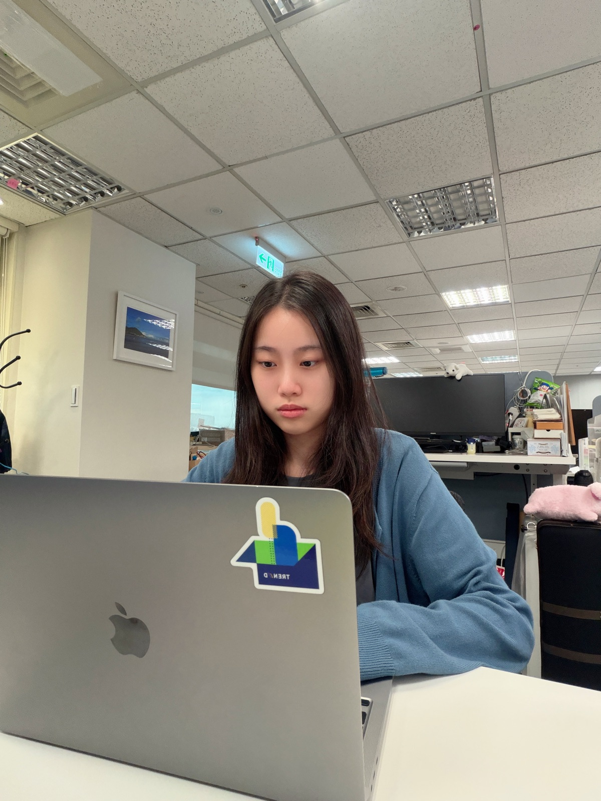

About
Hi, I'm Stella Wang.
I've always been interested in technology and creative design. After enrolling in the Informatics program at the University of Washington–Seattle, I discovered a passion for UX design through taking multiple design and research courses. Throughout building multiple projects in classes as well as internships, I've steadily grown proficient in design tools such as Figma, Miro, and Adobe Creative Suite.
Working closely with users, staying open to feedback, and always looking to improve have built my confidence as a designer and taught me that empathy is what good design really comes down to. As I continue my journey toward becoming a UI/UX Designer, I'm eager to learn and collaborate with other inspiring designers, and to contribute to meaningful projects that make a positive difference in users' lives.
Skills & Tools
A quick overview of what I bring to a project.
Research
User interviews, surveys, competitive analysis
Design
Wireframing, prototyping, visual design, design systems
Testing
Usability testing, A/B testing, heuristic evaluation
Tools
Figma, FigJam, Miro
Experience
July 2026 – Present
June 2025 – August 2025